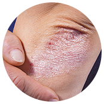
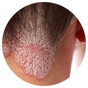
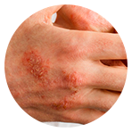
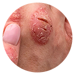
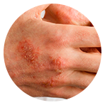
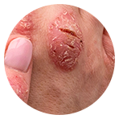
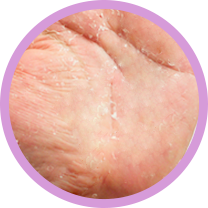

DR.DERM
egészséges bőr problémák nélkül-

Gyorsan enyhíti a viszketést és a hámlást
-
Gyógyítja a pikkelysömörös foltszerű elváltozásokat
-
Megszünteti a pikkelysömör okait
-
Megakadályozza a betegség terjedését betegség

Csak ma!
-50% kedvezmény
rendeléskor
Mi történik a pikkelysömör fedte bőrrel?
A bőr felső rétegét epidermisznek hívják. A réteg alapját keratinociták képezik, amelyek átlagosan 28 napig élnek. Pikkelysömör esetén a keratinociták sokkal gyorsabban szaporodnak, így az előzőeknek nincs idejük idejük megérni és megöregedni. Ezért 28 helyett csak 4-5 napig élnek!
A gyulladás az immunrendszer működési különböző zavarait idézi elő. Az éretlen keratinociták önmagukban nem hagyhatják el a bőrt. A felszínen felhalmozódnak és pikkelysömörös foltszerű elváltozásokat képeznek. A gyulladás az irhát is megtámadja, így a verejtékmirigyek és a faggyúmirigyek is részt vesznek ebben a folyamatban. Szekréciójuk csökken, a bőr elveszítihidratáltságát és a zsírt, kiszárad, repedezni kezd.

A pikkelysömör
súlyosbodásához
vezethetnek:
 a stressz;
a stressz;- a hideg és a száraz idő;
- a bőrsérülések;
- egyes gyógyszerek;
- egyes fertőzések

Hibák a pikkelysömör kezelésekor:
-

Nem megfelelő bőrápolás
Pikkelysömör esetén a bőr kiszárad és durva lesz, és az epidermisz szaruhártyája jelentősen megvastagszik. Kerülje a tápláló, hidratáló és illatos krémeket. Használjon speciális termékeket, amelyek rugalmasabbá teszik a bőrt. A gyakori kézmosást, akárcsak a fürdés gyakoriságát, a lehető legalacsonyabb szinten kell tartani, mivel a védőréteg ezek során vékonyabbá válik, ami az elváltozások még erősebb elterjedéséhez vezet.
-

Hormonterápia
A hormonterápia addiktív, és nem szünteti meg a háttérben meghúzódó okokat. Segíti a kozmetikai hatás elérését azáltal, hogy kiegyenlíti a bőrgöbéket és megszünteti a bőrpírt. Hormonok alkalmazásával az epidermisz vékonyabbá válik és elveszíti védőrétegét, ami bőrrákhoz is vezethet.
-

Diéta
A pikkelysömör kialakulásának megelőzéséhez mindenképpen ki kell zárni az étrendből a magas koleszterintartalmú élelmiszereket, a gyorsan felszívódó szénhidrátokat, a mesterséges színezékeket és ízesítőket. A helytelenül megválasztott étrend a betegség súlyosbodásához vezethet. A megválasztott termékekkel kialakított és megválasztott étrenddel és egy terápiával átmeneti javulás érhető el.
Belefáradt már, hogy
folyton takargatnia kell a testét?- Kényelmetlenül érzi magát mások véleménye miatt?
- Hosszú ideje tart már a pikkelysömör?
- Nem működik a diéta?
- Unja már fizetni az orvosokat?
- Unja már az elviselhetetlen viszketést?
- Nehéz ruhát találni magára?
- Félnek az emberek attól, hogy fertőző és elkerülik Önt?
- Semmi értelme nedvesíteni a levegőt?
- Egyre jobban bezárkózik?
- Már úgy gondolja, hogy
mindent kipróbált a pikkelysömörre,
de semmi sem segített
?
Mi gondoskodtunk
a problémás bőrre hajlamos emberekről.
Többé nem kell elrejtenie a bőrét a világtól!
-

Helyreállítja a sérült szövetet
-
Azonnal enyhíti a viszketést
-
Останавливает Megállítja a gyulladásos folyamatot
A krém természetes alkotóelemeinek kölcsönhatása javítja a szervezet anyagcseréjét, amelynek eredménye a gyógyulás. És emellett a viszketés és a hámlás már az első használat után elmúlik.
Az DR.DERM krémmel történő kezelés megkezdése után megáll a betegség terjedése, és a bőrgöbék által károsított szövetek regenerálódni kezdenek.
Egy kúra elvégzése után a bőr teljesen megújul. Helyreáll a sejtosztódás természetes folyamata egy 28 napos ciklussal.
Az DR.DERM egy univerzális, természetes krém, amely segít minden pikkelysömörnél:
 

- egyszerű;
- pusztulózus;
- könnycsepp forma;
- exudatív
Miért hatékony az DR.DERM?
zsálya
Antiszeptikus hatással bír, enyhíti a dagadást, a hámlást és részt vesz az pikkelysömörös foltok felszívódásában.
shea vaj
Csökkenti a szárazságot , elősegíti a papulák gyógyulását, helyreállítja a bőr természetes textúráját.
kaliszía
Segít fenntartani a normál pH-értéket , tonizál, gyulladásgátló és nyugtató hatást gyakorol az érintett bőrre. Frissítő és pihentető hatású, megtölti a bőrt a szükséges nedvességgel.
fehér fenyőmag-olaj
Antibakteriális, antioxidáns és regeneráló hatású. Növeli a bőrfelület tónusát, szilárddá és rugalmassá teszi a bőrt.
száraz aloe kivonat
Segít fenntartani a normál pH-értéket tonizáló, gyulladásgátló és nyugtató hatást gyakorol az érintett bőrre. Frissítő és pihentető hatású megtelíti a bőrt a szükséges nedvességgel.
Mindössze 4 hét
és nem kell többé elrejtenie a bőrét a világtól!-

1. HÉT
Elmúlik a gyulladás, a viszketés, a hámlás, a lepedék növekedése megáll.
-

2. HÉT
Megindul a sérült szövetek regenerálódásának folyamata, mivel a sejtosztódási ciklus normalizálódik.
-

3. HÉT
A test pH-ja normalizálódik, a bőr tónusa javul. A bőr feszes lesz és rugalmas.
-

4. HÉT
Az étrend betartásával a betegség nem tér vissza többé a betegség.

Szakértői vélemény
A pikkelysömörnél fontos, hogy a kezelés a lehető legegyszerűbb legyen. A természetes krémek a pikkelysömör kezelésének jövője, és szerencsére már kaphatók ilyen krémek. A hormonok, az immunszuppresszánsok és a fototerápia nem csak gyors függőséget alakítanak ki, de a bőr atrófiáját is előidézik, amely később rákká is alakulhat.
A DR.DERM krém a szokásos külsőleg alkalmazható terápiáktól abban különbözik, hogy nem tartalmaz szteroidokat és függőséget okozó komponenseket. A természetes összetétel nemcsak a foltok (kevésbé komolyak és komolyabbak) gyógyulását segíti elő, hanem megakadályozza a pikkelysömör további terjedését is.
A DR.DERM krém kúraszerű használata lehetővé teszi a pikkelysömör visszatérésének elkerülését és így lehetővé teszi a teljes értékű életet.

Vélemények az DR.DERM krémről
Heller Lilla, 40 éves
A pikkelysömör miatt igazi remete lettem. A súlyosbodás időszakaiban még a házból sem mertem kilépni. Mindent kipróbáltam: kenőcsöket, krémeket, betekertem a testemet, sókezeléseket is próbáltam, orvosi üdülőhelyekre is eljártam. Segítettek, de csak egy rövid ideig. Mindig azt gondoltam, hogy hogy lehet az, hogy a jóval komolyabb betegségek már gyógyíthatók, hogy lehet az, hogy a pikkelysömörre nem tudnak kitalálni egy gyógyszert? És az imáim meghallgattattak. Amikor az DR.DERM a kezembe került, nem fűztem nagy reményeket hozzá. És hogy ez a soron következő krém segíteni fog nekem! Három hét után a foltok kivilágosodtak, a szárazság megszűnt, alig több mint egy hónap elteltével pedig teljesen eltűntek. Már fél éve tiszta a bőröm!
Simon Ádám, 28 éves
A pikkelysömör fiatalkoromban kezdődött egy vizsgaidőszakban, úgy néz ki, a súlyos stressz miatt. Hámlással kezdődött, és két hónap múlva már csak hosszú ujjú felsőket viseltem, mivel a kezem még a legnagyobb horror rajongókat is megijesztette. Ezek már nem valamilyen sebek, hanem már valamiféle hús volt. Az orvosok azt mondták, hogy pikkelysömör. Hormonális kenőcsöket, krémeket, pirulákat és még injekciókat is felírtak. De mind hiába. Csak a jeges víz enyhítette a viszketést. Nagyon sokáig gyógyult, de aztán megint kiújult. Engem az DR.DERM krém és a diéta mentett meg. Hamarosan négy hónap elteltével már el is felejtettem, és szavakkal ki sem tudom fejezni, milyen boldog voltam.
Óvakodj
a hamisítványoktól!
A DR.DERM krém hatalmas népszerűsége miatt a hamisítás esetei egyre gyakoribbak. Az eredeti pikkelysömör elleni DR.DERM krém csak ezen a webhelyen vásárolható meg.

DR.DERM
egészséges bőr problémák nélkül-
Gyorsan enyhíti a viszketést és a hámlást
-
Gyógyítja a pikkelysömörös foltszerű elváltozásokat
-
Megszünteti a pikkelysömör okait
-
Megakadályozza a betegség terjedését betegség
Barabás Anna, 31 éves
A pikkelysömörben a legrosszabb az az, hogy morálisan is tönkre vág. A foltok leválnak, viszketnek, növekednek, tehát mindenki undorral néz rád. Már belefáradtam az emberek reakcióiba. Ami pedig a ruhákat illeti, arról inkább ne is beszéljünk, csak természetes szöveteket és nagyon szabad ruhák. A legrosszabb az volt, amikor a pikkelysömör megjelent a fejemen is. Lehetetlen ezzel együtt élni. Depressziós lettem volna előbb vagy utóbb, ha nem próbáltam volna ki a DR.DERM-t. Amit ez a krém csinált a bőrömmel, az egy csoda. Ez az egyetlen gyógymód, amely hosszútávon is segített nekem. Végre teljes értékű embernek érezhetem magam. Köszönöm!